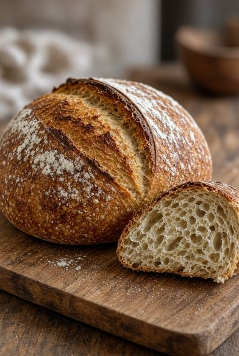

Learn how to make sourdough bread from scratch. The ability to make your own bread, especially sourdough bread is both an art and a craft. But what really stands out is enjoying the freshness of bread that just came out of the oven.